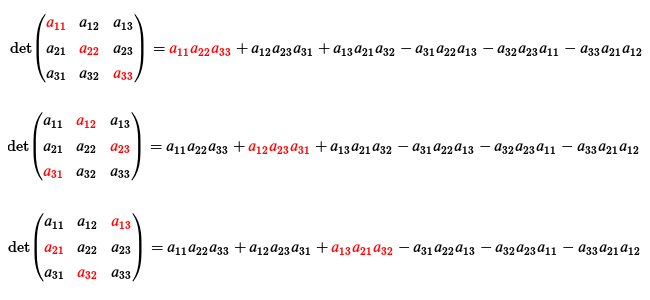

The demo shows how Javascript can be used to produce interactive documents. Clicking on the button will successively highlight different terms of Sarrus’ rule. Below is a screenshot of the three first steps.
